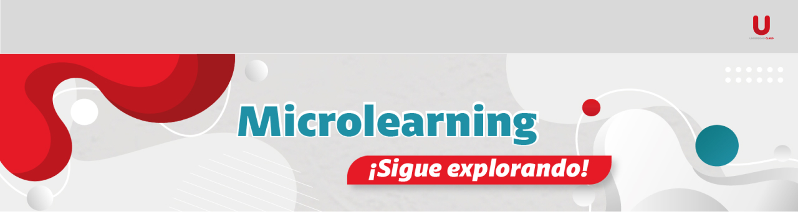

El microlearning es una metodología de aprendizaje innovadora que presenta los contenidos en breves segmentos, con el fin de maximizar la retención y la aplicabilidad del conocimiento. Esta estrategia permite a los usuarios aprender de forma eficiente y a su propio ritmo. Además, puede utilizarse para el desarrollo de trivias, minijuegos, ruletas o quizzes gamificados.
¡Explora los mejores contenidos y transforma la experiencia de capacitación con recursos dinámicos y efectivos!
Este recurso se utiliza para que el usuario se forme de manera autónoma en el uso de aplicaciones y en la adquisición de habilidades blandas.

Libro Digital CAV
Microlearning PBX enlace directo E&N
8:00 am a 5:00 pm
| Tipo de requerimiento | Descripción | Primera respuesta | Resolución | Total SLA |
|---|---|---|---|---|
| Microlearning | Objeto de aprendizaje de corta duración (3 a 8 minutos de consumo) con principios de gamificación, cuyo objetivo es capacitar de una manera rápida y didáctica. | 2 | 36 | 38 |